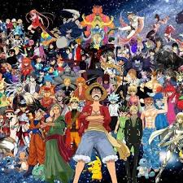

Anime is hand-drawn and computer animation originating from Japan. In Japanese, anime, a term derived from the English word animation, describes all animated works, regardless of style or origin.
The earliest commercial Japanese animations date to 1917. A characteristic art style emerged in the 1960s with the works of cartoonist Osamu Tezuka and spread in following decades, developing a large domestic audience. Anime is distributed theatrically, through television broadcasts, directly to home media, and over the Internet. In addition to original works, anime are often adaptations of Japanese comics (manga), light novels, or video games. It is classified into numerous genres targeting various broad and niche audiences. There is also a term in Anime world (Otaku), Otaku is a Japanese term for people with consuming interests, particularly in anime and manga. Its contemporary use originated with a 1983 essay by Akio Nakamori in Manga Burikko. Otaku may be used as a pejorative; its negativity stemming from a stereotypical view of otaku as social outcasts and the media's reporting on Tsutomu Miyazaki, "The Otaku Murderer", in 1989. According to studies published in 2013, the term has become less negative, and an increasing number of people now identify themselves as otaku,both in Japan and elsewhere. Out of 137,734 teens surveyed in Japan in 2013, 42.2% self-identified as a type of otaku.
Order details